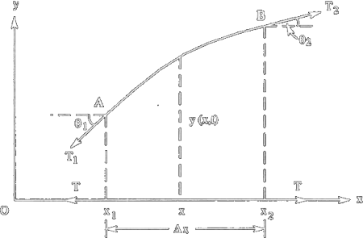

The Nature of Waves
A wave, or vibration, represents the propagation of a perturbation in a material. Example of waves are the vibrations of a stretched string, due to induced elastic deformation, the circular waves in a liquid, due to the energy transferred to it by a perturbation in a point, sound waves, due to local pressure variation in a gas.
Hence, a wave is generated by an external action which transfers energy to a medium in which the wave propagates: no matter displacement ever takes place, but only an oscillation of the matter wich returns to its original position once the perturbation has passed by.
The general properties of waves are easier to understand if the propagating oscillation is generated by mechanical efffect.
There are two features common to all waves:
A wave is a traveling disturbance.
A wave carries energy from place to place.
Consider a water wave, for instance. In Figure 16.1 the wave created by the motorboat travels across the lake and disturbs the fisherman. However, there is no bulk flow of water outward from the motorboat. The wave is not a bulk movement of water such as a river, but, rather, a disturbance traveling on the surface of the lake. Part of the wave’s energy in Figure 16.1 is transferred to the fisherman and his boat.
Mechanical waves fall into two categories, namely, transverse and longitudinal. This classification is purely on the basis that the medium on which the wave propagates is based is one dimensional. If the dimension of the medium is either 2D or 3D, the wave propagation in usch meda is quite complex and such clear-cut categories as longitudinal or transverse waves cannot be defined.
Interactive Figure illustrates how a transverse wave can be generated using a Slinky, a remarkable toy in the form of a long, loosely coiled spring. If one end of the Slinky is jerked up and down, as in part a, an upward pulse is sent traveling toward the right. If the end is then jerked down and up, as in part b, a downward pulse is generated and also moves to the right. If the end is continually moved up and down in simple harmonic motion, an entire wave is produced. As part c illustrates, the wave consists of a series of alternating upward and downward sections that propagate to the right, disturbing the vertical position of the Slinky in the process. To focus attention on the disturbance, a colored dot is attached to the Slinky in part c of the drawing. As he wave advances, the dot is displaced up and down in simple harmonic motion. The motion of the dot occurs perpendicular, or transverse, to the direction in which the wave travels. Thus, a transverse wave is one in which the disturbance occurs perpendicular to the direction of travel of the wave. Radio waves, light waves, and microwaves are transverse waves. Transverse waves also travel on the strings of instruments such as guitars and banjos.
A longitudinal wave can also be generated with a Slinky, and Interactive Figure 16.3 demonstrates how. When one end is pushed forward along its length (i.e., longitudinally) and then pulled back to its starting point, as in part a, a region where the coils are compressed together is sent traveling to the right. If the end is pulled backward and then pushed forward to its starting point, as in part b, a region where the coils are stretched apart is formed and also moves to the right. If the end is continually moved back and forth in simple harmonic motion, an entire wave is created. As part c shows, the wave consists of a series of alternating compressed and stretched regions that travel to the right and disturb the coils. A colored dot is once again attached to the Slinky to emphasize the vibratory nature of the disturbance. In response to the wave, the dot moves back and forth in simple harmonic motion along the line of travel of the wave. Thus, a longitudinal wave is one in which the disturbance occurs parallel to the line of travel of the wave. A sound wave is a longitudinal wave.
Water waves
A water wave is neither transverse nor longitudinal, since the motion of the water particles is not strictly perpendicular or strictly parallel to the line along which the wave travels. Instead, the motion includes both transverse and longitudinal components, since the water particles at the surface move on nearly circular paths, as Figure 16.4 indicates.

Rayleigh surface waves
Another example of waves with both longitudinal and transverse motion may be found in solids as Rayleigh surface waves. The particles in a solid, through which a Rayleigh surface wave passes, move in elliptical paths, with the major axis of the ellipse perpendicular to the surface of the solid. As the depth into the solid increases the "width" of the elliptical path decreases. Rayleigh waves are different from water waves in one important way. In a water wave all particles travel in clockwise circles. However, in a Rayleigh surface wave, particles at the surface trace out a counter-clockwise ellipse, while particles at a depth of more than 1/5th of a wavelength trace out clockwise ellispes. The movie below shows a Rayleigh wave travelling from left to right along the surface of a solid. I have identified two particles in blue to illustrate the counterclockwise-clockwise motion as a function of depth.
A wave can be vaguely definied as a disturbance of continuous medium that propagates with a fixed shape at constant velocity. Bisogna precisare che:
In the presence of absorption, the wave will diminish in size as it moves.
If the medium is dispersive different frequencies travel at different speeds.
standing waves don't propagate at all.
Elastic Waves along a Stretched String
Let's take any straight, stretched string in a musical instrument, with linear density μ assumed to be uniform along the string; As a wave passes throught any element of the string, the element moves perpendicularly to the wave's direction of travel (we are dealing with a transverse wave): if now give it the shape of a wavy curve, it becomes longer; this leghtening increases the tension further. We consider a very small segment of the continuous string. At equilibrium the segment occupies a small length Δx centered at x. Let the mass of this segment be Δm = μdx; The string tension at equilibrium, denoted by T, is also assumed to be uniform.
For a general non equilibrium situation the segment has a transeverse displacement y(x,t) averag over the segment AB. Tensions T1 and T2 to the segment AB act along the tangents. The tension in the segment is no longer T, since the segment than its equlibrium length Δx. The tangents at the points A and B make angles θ1 and θ2 with the horizontal line. Let us find the net upward force Fy on the segment. At its right end it is pulled upward with a force T2 sin θ2. Thus, the net upward force on the segment Δx of the string is
Fy(t) = T2 sin θ2 - T1 sin θ1
In the small oscillation approxumation, we may neglect the increase in legth of the segment, and the angles θ1 and θ2 are very small. So, sin θ2 ≈ tan θ2 and sin θ1 ≈ tan θ1, T2 ≈ T and T1 ≈ T. We now have
Let us write f(x) = ∂y/∂x. Thus
f(x1 + Δx) - f(x1) ≈ Δxf'(x)
As Δx → 0,
Here, we have neglected the higher order terms since Δx is very small.
According to Newton's second law the force on the segment of lenght Δx is equal to
Hence, the equation of motion of the deformation of a stretched string is
or
Similar equations appear whenever a wave motion is encountered. The previous equation has the form of classical wave equation or D'Alembert equation
where v = (T/μ)1/2 = velocity of propagation of the wave. D'alembert's wave equation is a second-order linear partial differential equation. Later we shall discover that elastic waves in many media are not described by the simple D'alembert equation. In such an event waves are found to have a velocity that depends on frequency, so v = v(f). Fortunately, this is not the case for electromagnetic waves.
Properties of Solution of Wave Equation
It is clear from the form of the wave equation that the solution of this equation must be a linear function of the variables x and t. A function of the form
y(x,t) = f1(x - vt) + f2(x + vt)
is one of its solutions.
We attempt a solution of the form f(x,t) = f(x ± vt) that we write as f(u), where u = x ± vt, where f(u) can be any twice-differentiable function. So
Now, use the chain rule,
So
and
Substituting into the wave equation,
QED.
In the mathematical sense, a wave is any function that moves:
f1 represents a plane transveres wave progressing along the positive x-direction with wave velocity v, (rightward or forward);
f2 representes a plane transverse wave progressing along the negative x-direction with the same velocity.
Thefore, the general solution represents two plane transverse waves moving in the opposite directions. In general, waves may not have the same waveform since f1 and f2 are taken as sinusoidal and represent plane progressive harmonic waves.
Let's focus on the rightward function, f(x - vt). Te function f, at time t0 assumes the value P0 of coordinate x0. At times t it assumes the value P of coordinate x. Thus
y(x,t) = f0(x0 - vt0) = f(x - vt)
But this condition can occur only if also the argument of the function is the same, so
x0 - vt0 = x - vt
or
x = x0 + v(t - t0)
This result implies that the function propagates with uniform rectilinear motion featuring a velocity v along the positive direction of axis x (progressive wave). It is clear that, since only the sign of constant v changes, the function g(x + vt) represents the propagation of a deformation along the negative direction of axis x (regressive wave). The general solution of d'Alembert equation is therefore a superposition between a progressive wave and a regressive wave both propagating with speed v.
The constant quantity x ± vt is called phase of the wave. The constant v is called phase velocity since, being the phase constant,
x ± vt = const ⇒ dx/dt ± v = 0 ⇒ dx/dt = ±v
Its interpretation as the velocity of a wave is valid only if, as it occurs in the case at hand, the shape of the wave in unchanged while it propagates in the medium. The penonomenon which causes a wave to change its shape is called dispersion. If the shape keeps, the medium is called non-dispersive; in the oppositive case the medium is called dispersive. In a dispersive medium the phase velocity loses its physical meaning and a more complicated concept, called group velocity, must be introduced.
Superposition principle
D'Alembert equation is linear, and the principle of superposition holds:
If f1(x,t) and f2(x,t) are solutions to the wave equation, then their sum f1(x,t) + f2 (x,t) is also a solution.
Two particles cannot occupy the same position simultaneously. On the contrary any number in the case of waves not only they can occupy the same space simultaneously, but each passes through the space as though the others were not there. By the superposition principle, if several waves, each described by its own wave function, are passing through a particular location, the displacement of the medium at that location at a particular time is just the sum of all the wave functions evaluated at that location and time.
From this follows that waves can constructively or destructively interfere.